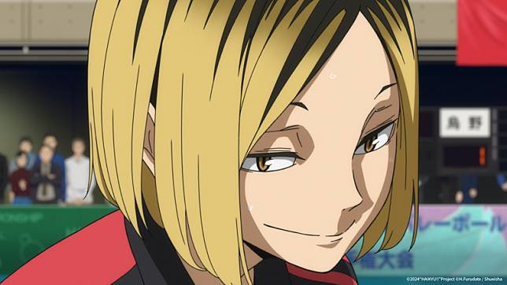

|

位置：S
身高：169.2cm 生日：10月16日 喜歡的東西：蘋果派 最近的煩惱：夏天太熱而冬天太冷 |
位置：MB
身高：187.7cm 生日：11月17日 喜歡的東西：鹽烤秋刀魚 最近的煩惱：擺不平睡亂的頭髮 |
位置：WS
身高：176.7cm 生日：2月22日 喜歡的東西：炒麵麵包 最近的煩惱：要怎麼跟女生説話才好 |
|
位置：WS
身高：176.5cm 生日：4月8日 喜歡的東西：海蘿蔔 最近的煩惱：雖然有瑣碎的擔心但覺得活着總會有辦法。 |
位置：L
身高：165.2cm 生日：8月8日 喜歡的東西：炒蔬菜 最近的煩惱：感覺學弟很讓人擔心。 |
位置：WS
身高：178.3cm 生日：9月29日 喜歡的東西：魷魚乾 最近的煩惱：山本他説"再多説點"。 |
|
位置：MB
身高：194.3cm 生日：10月30日 喜歡的東西：魷魚乾 最近的煩惱：山本他説"再多説點"。 |